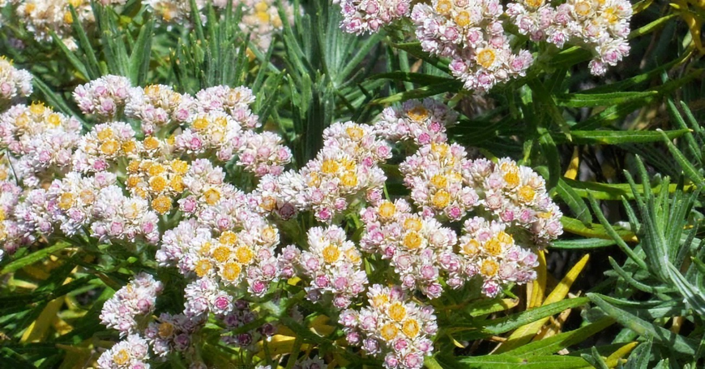

Jawa adalah salah satu pulau di Indonesia yang terletak di Kepulauan Sunda Besar dan merupakan pulau terluas ke-13 di dunia. Jumlah penduduk di Pulau Jawa sekitar 150 juta. Pulau Jawa dihuni oleh 60% total populasi Indonesia. Angka ini menurun jika dibandingkan dengan sensus penduduk tahun 1905 yang mencapai 80,6% dari seluruh penduduk Indonesia. Penurunan penduduk di Pulau Jawa secara persentase diakibatkan perpindahan penduduk (transmigrasi) dari pulau Jawa ke daerah lain di Indonesia.
Edelweis (Anaphalis javanica)
Memiliki nama lain yaitu bunga senduro adalah tumbuhan endemik pada zona alpina di setiap pegunungan di Indonesia. Tinggi tanaman ini bisa mancapai 8 meter dengan batang sebesar kaki manusia dan masuk ke dalam tumbuhan langka. Bunga – bunga edelweis akan bermekaran pada bulan April hingga Agustus. Pada tahun 1988, sebanyak 636 batang bunga edelweis dibawa oleh pengunjung dari Taman Nasional Gunung Gede Pangrango (salah satu tempat perlindungan terakhir edelweis). Namun, sekarang setiap pendaki yang ketahuan memetik dan membawa bunga edelweis akan dikenakan hukuman dan denda.
Merak Hijau (Polyplectron hombroni)
Merak Hijau, dengan bulu-bulu warna-warni yang memukau, adalah spesies merak yang hanya ditemukan di Pulau Jawa. Keindahannya membuatnya menjadi salah satu daya tarik alam pulau ini. nama ilmiahnya adalah Polyplectron hombroni. Merak hijau adalah salah satu jenis merak yang paling langka di dunia.
Gallery